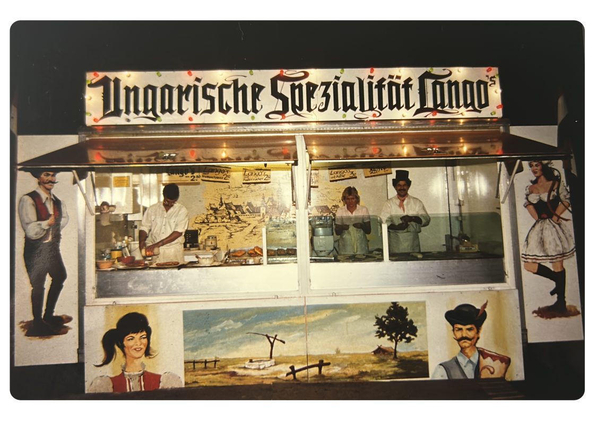
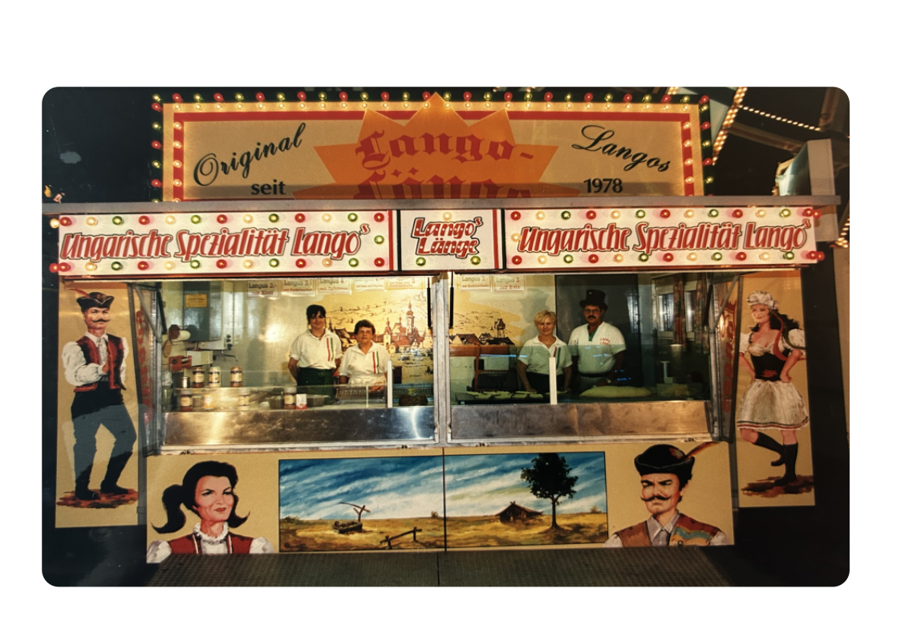
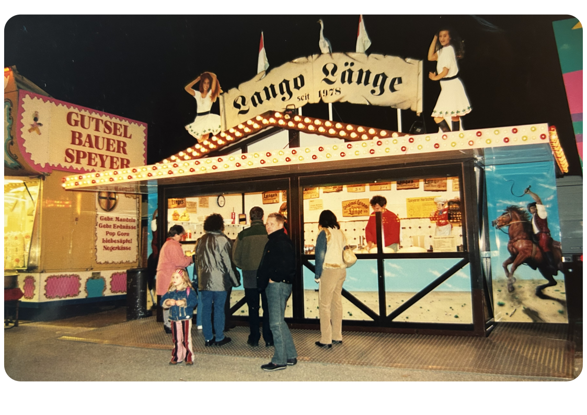
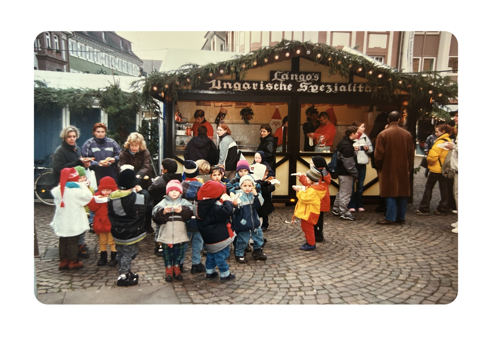
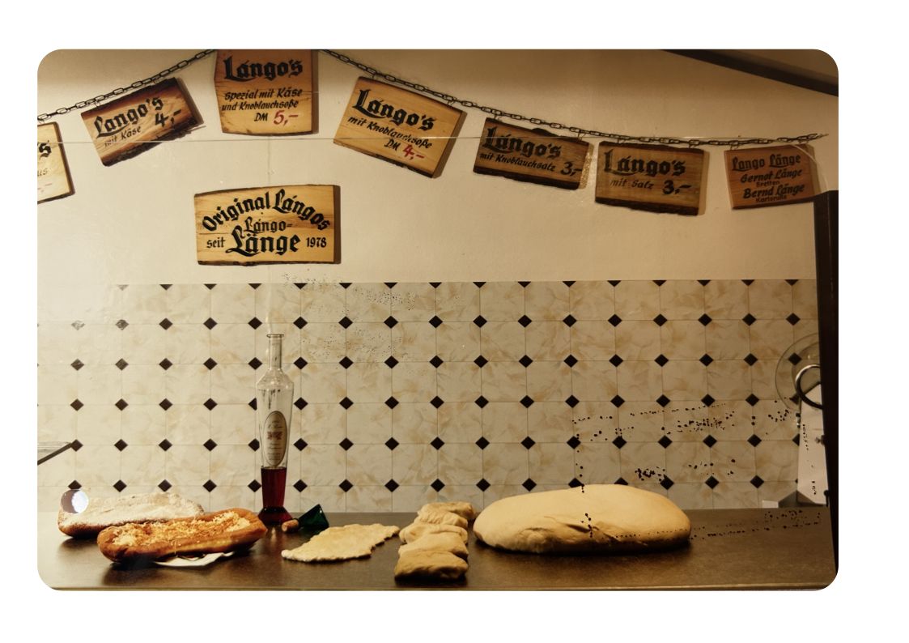
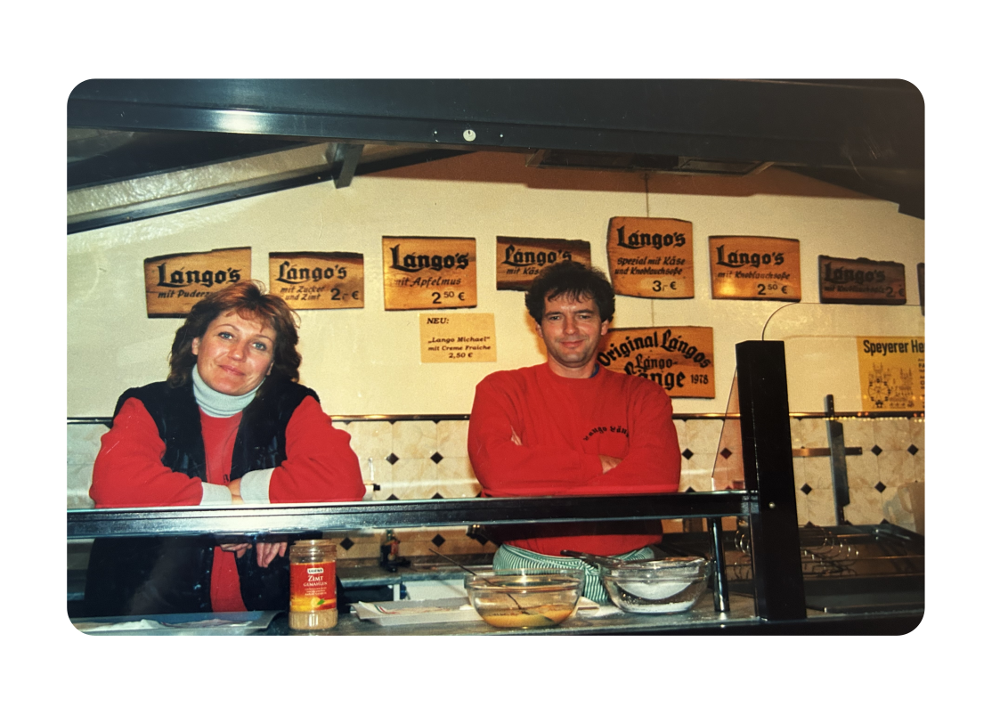
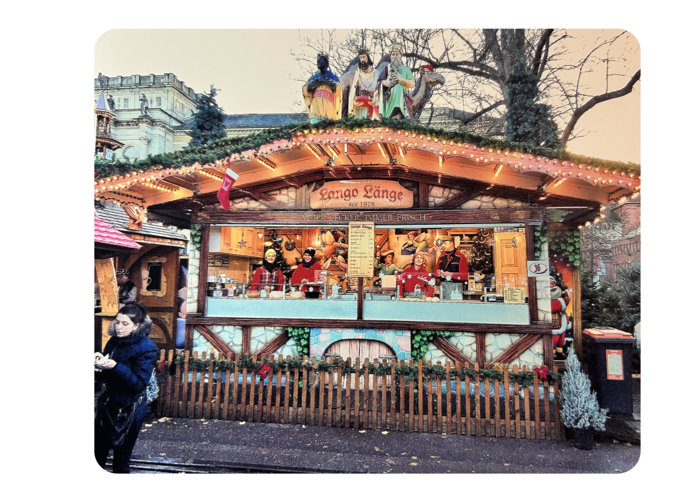
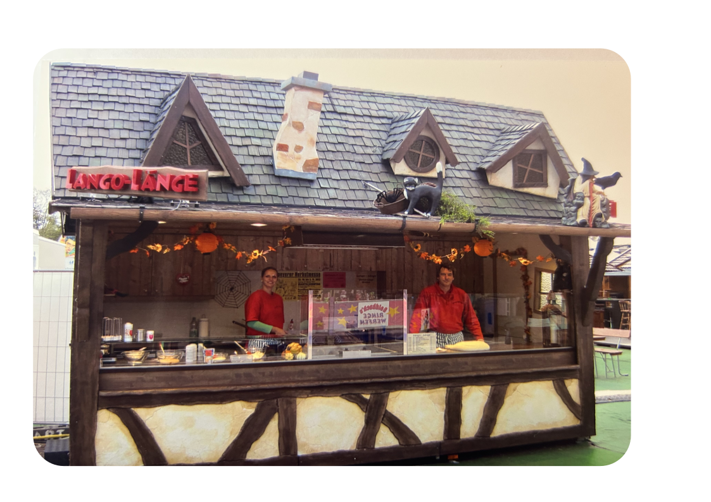

Alles begann mit einem Familienurlaub am Plattensee im schönen Ungarn.
Dort entdeckte die Familie Länge einen knusprig frittierten Teigfladen, den die Ungarn mit Stolz
als eine ihrer Spezialitäten anpriesen. Zu Recht sollte man meinen, denn mit dem ersten Bissen begann eine LÄNGEre Reise,
die der Langos auf sich nehmen durfte. Seine ersten Schritte führten ihn ins Badnerland, auf das Durlacher Altstadtfest.
Langos waren 1978 in der Republik vollkommen unbekannt.
Bernd Länge legte somit den Grundstein. Aber das Fundament festigte sich rapide.
Zu diesem Zeitpunkt befuhr dieser Wagen die ersten Märkte.
Langos waren zu dem Zeitpunkt in der Republik vollkommen unbekannt.
Bernd Länge legte somit den Grundstein. Aber das Fundament festigte sich rapide.

1984 war der Wagen bereits komplett umgebaut und eroberte die Festplätze im Südwesten.
Sein Heimspiel hatte er fortan regelmäßig auf den Karlsruher Veranstaltungen und war auch seiner Zeit
der erste Langoswagen welcher auf dem Cannstatter Volksfest in Stuttgart zu finden war.

Kaum hatten die Buschtrommeln zu wirbeln begonnen, war die Qualität der Langos in aller Munde.
Die Familie Länge reagierte prompt und ließ für die Mannemer Mess eine Holzhütte im rustikalen Stil bauen.
Nur zwei Jahre später wurde die Hütte bereits durch eine Schönere und Größere ersetzt und auch in Speyer eingesetzt.

Auch am Schoppegässle in Durlach fand sie ihren Platz.
Süßer die Langos, nie schmecken,
als zu der Weihnachtszeit.
Langos wurden natürlich auch auf den Weihnachtsmärkten immer wichtiger.
Im Winter 1990 öffnete der Ettlinger Weihnachtsmarkt erstmals seine Pforten für die Familie Länge
– und mit ihm ein neues Kapitel adventlicher Tradition.

Die Deutsche Mark verabschiedete sich. Ein letztes Mal wurden die urigen Holztafeln mit der alten Währung der Republik beschriftet.

Das Zeitalter des Euros begann.

Der Wagen bereist nicht nur die großen Festplätze,
sondern steht auch als Traditionssgeschäft der Familie Länge auf dem Karlsruher Christkindlesmarkt.

Das Hexenhaus von der Firma Dietz kommt überall dort zum Einsatz wo es rustikal sein soll, wie das Peter und Paul Fest in Bretten oder der Mannheimer Märchenwald.

Ob auf der Mess in Karlsruhe oder Rastatt – an diesem Wagen kommt keiner vorbei.